Standard operating procedure · SOP-01Transmission electron microscopy
TEM direct alignment
From the electron gun to the objective stigmator: the five alignments, in the order that keeps each one from undoing the last.
SOP-01 · version 1.0 · October 2026 Level: new users and refreshers Practice it on the TEM-view digital twin
Seeing with ElectronsTEM-view · Advanced-EM
SOP-01 · TEM direct alignmentOverview
Before you start
Why the order matters
Each alignment assumes the ones before it are done. Correct the condenser stigmator with an off-center C2 aperture, or align pivot points with the specimen at the wrong height, and later corrections drift away. Work from the gun down the column, and go back a step whenever a cue looks wrong.
01GunFlash & Go (cold FEG only), gun shift, gun tilt
Column and gun vacuum are in the green; column valves are open only when you are ready to view.
High tension is at the operating voltage and has had time to settle.
The specimen is inserted, the holder is seated, and the stage is at α = β = 0°.
The objective aperture is out; the selected-area aperture is out.
You are in TEM mode at a medium magnification with the beam on the fluorescent screen (or a screen-view camera).
You know which electron source your microscope has (see right).
VocabularyBrightness (also called intensity or C2) spreads or focuses the beam. Crossover is the setting where the beam is smallest. Multifunction knobs are the X/Y knobs that drive whichever alignment is selected.
Know your electron source
Source
Emission
Flash & Go
Cold FEG room-temperature W tip
Falls slowly as gas adsorbs on the tip
Yes: when emission has dropped, and at the start of a session
Schottky FEG ZrO/W tip at ~1800 K
Steady for months
No: never flash a Schottky source
LaB₆ / W thermionic
Set by filament heating and saturation
No: saturate the filament instead
Flash & Go is for cold FEG onlyThe flash heats a cold-field-emission tip for a moment to drive off adsorbed gas. A Schottky or thermionic gun runs hot all the time and has no flash. If your gun is not a cold FEG, skip that part of step 1.
Names vary by vendorThis guide uses generic names. Menus, knob labels and wobbler names differ between manufacturers and software versions. Your facility's procedures and the manufacturer's manual come first.
Seeing with Electrons · TEM-view2
SOP-01 · TEM direct alignmentStep 1 of 5
1Gun
Gun: emission, shift and tilt
The gun alignments put the source on the axis of the condenser system. When they are off, the beam walks across the screen every time you change spot size, and you lose current.
Procedure
Cold FEG only: if the emission current has dropped (or at the start of the day), run Flash & Go. Wait for the emission to settle before aligning. Skip this on a Schottky or thermionic gun.
Bring the beam to crossover with the brightness knob, so it is a small spot.
Select a large spot number (the smallest spot). Center the spot on the screen with beam shift.
Select a small spot number (a larger spot). If the spot has moved, center it with gun shift, not beam shift.
Repeat steps 3 and 4 until the spot stays put as you change spot size.
Select gun tilt and adjust it to maximize the screen current (or the brightness of the spot).
The crossover stays centered at every spot size, and the screen current is at its maximum.
Why two knobsBeam shift moves the beam below the condenser lenses; gun shift moves it at the source, and how far a source offset moves the spot depends on the spot size. Correcting at each end of the spot range and iterating converges on both. If your direct-alignment software prompts for a different spot size or knob, follow its prompts.
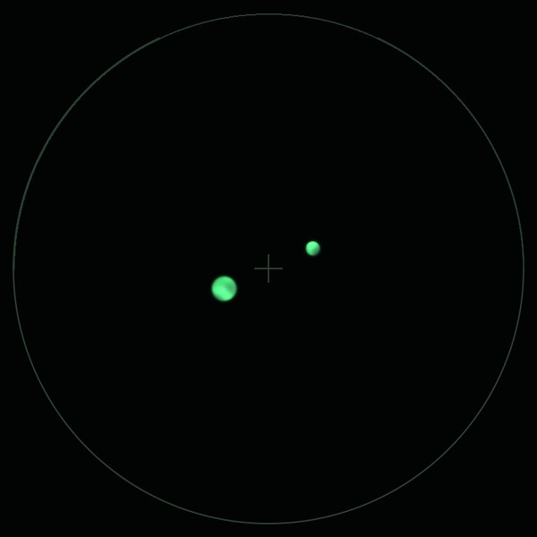
OffTwo spot sizes superimposed: the crossover walks when the spot size changes.AlignedBoth spot sizes land on the same place.
Seeing with Electrons · TEM-view3
SOP-01 · TEM direct alignmentStep 2 of 5
2Illumination
Crossover, C2 aperture, condenser stigmator
A centered C2 aperture makes the beam open and close about one point, so changing brightness never moves the illuminated area. A corrected condenser stigmator keeps the beam round on both sides of focus.
C2 aperture
At crossover, center the spot with beam shift.
Spread the beam with the brightness knob until it fills about half the screen.
If it does not expand concentrically about the center, move the C2 aperture (mechanical or motorized) toward the center.
Return to crossover, re-center with beam shift, spread again. Repeat until the beam opens about one point.
Condenser stigmator
Go a little to one side of crossover: an astigmatic beam is an ellipse.
Go to the other side: the ellipse turns by 90°. That flip is condenser astigmatism.
Select the condenser stigmator and adjust X and Y until the beam is round on both sides of crossover.
The beam expands concentrically about the screen center, and stays round on both sides of focus.
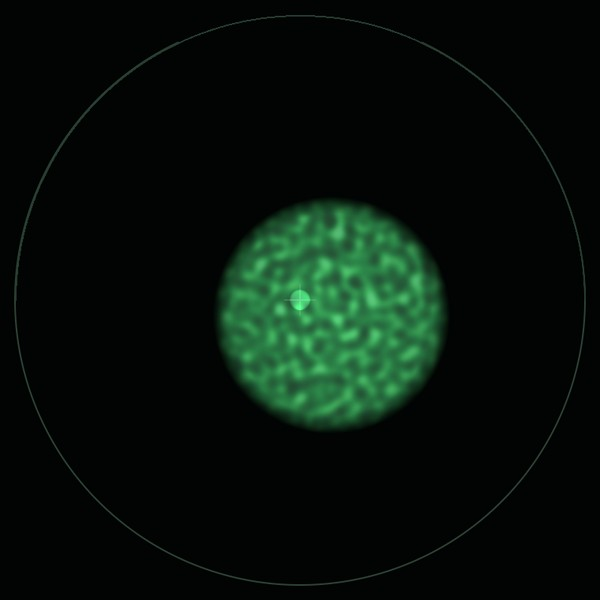
C2 offThe spread beam opens to one side of the crossover.
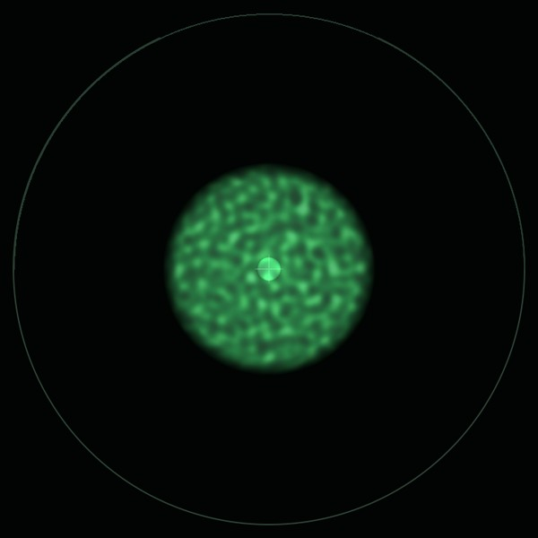
C2 centeredIt opens concentrically.
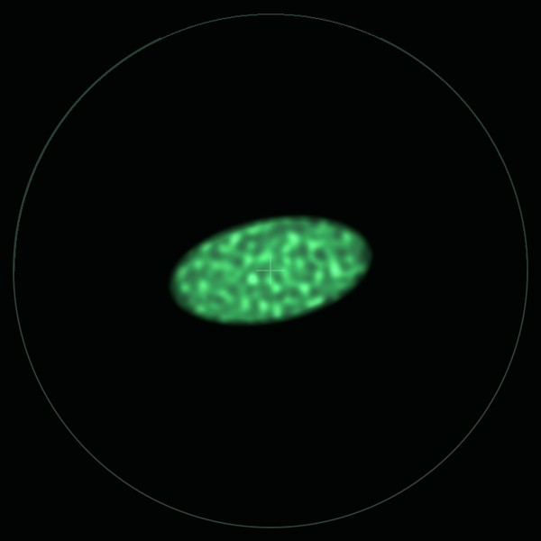
OverElliptical on one side of crossover…
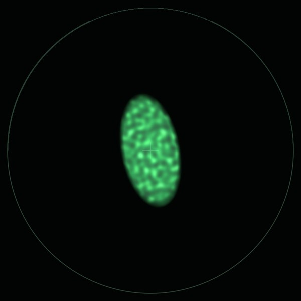
Under…and turned 90° on the other.
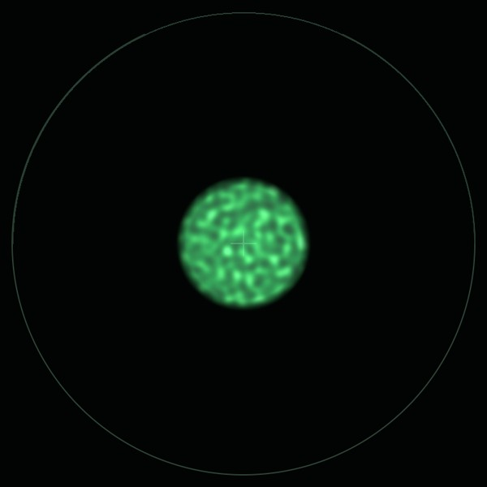
StigmatedRound on both sides.
Common mistakesMoving the C2 aperture while the beam is spread, without first re-centering the crossover with beam shift: the two corrections then chase each other. Do one at crossover and the other spread, and alternate.
Check the flipJudging condenser astigmatism on one side of focus only can hide it: a slightly elliptical beam may just be off-round from the aperture edge. The 90° flip through crossover is the reliable sign.
Seeing with Electrons · TEM-view4
SOP-01 · TEM direct alignmentStep 3 of 5
3Eucentric height
Put the specimen on the tilt axis
At the eucentric height, the region you are looking at stays in place when the stage tilts. It is also the height the objective lens is designed for, so focus, magnification and the later alignments are all defined there.
Procedure
Find a recognizable feature (an edge, a particle) at a medium magnification and center it.
Turn on the α wobbler (Z-wobbler). The stage rocks back and forth, typically by ±5° to ±15°.
If the image swings sideways, adjust stage Z until the movement stops. Large swings: big Z steps; small swings: fine steps.
At the right height the feature only pulses in place. Turn the wobbler off.
Optionally, set the objective to its standard focus (eucentric focus) and refocus with Z, if that is your facility's practice.
With the α wobbler on, the image no longer shifts laterally: it pulses in place.
TipRe-check the eucentric height whenever you move to a new area of a specimen that is not flat, and after re-inserting the holder.
If it never stops movingMake sure the wobbler is tilting α (not β) and that the image shift you see is not drift: turn the wobbler off and watch for a few seconds. If the stage Z reaches its limit, the holder or specimen may be mounted too high or too low.
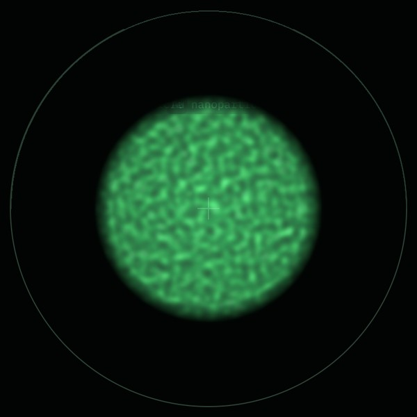
Wrong ZTwo moments of the wobble averaged: the image smears as it swings sideways.
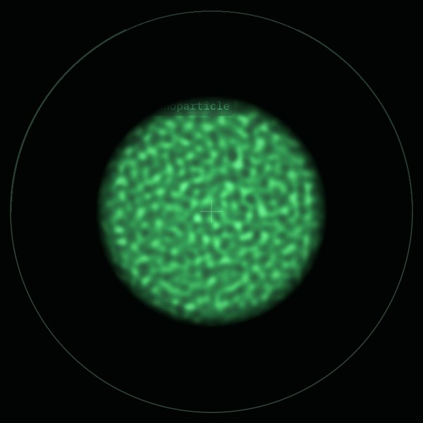
EucentricThe same two moments overlap: the image stays sharp.
Seeing with Electrons · TEM-view5
SOP-01 · TEM direct alignmentStep 4 of 5
4Pivot points & voltage center
Tilt without moving
Pivot points make beam tilt and beam shift independent: tilting the beam must not translate it across your region of interest, and shifting it must not tilt it. The voltage (or current) center then puts the beam on the objective lens's axis.
Pivot points
Near crossover with a small spot, select beam tilt pivot point X. The wobbler tilts the beam back and forth in X.
If you see two spots (or one swinging spot), merge them into one with the multifunction knobs.
Repeat for pivot point Y.
If your instrument lists them, do the same for the beam shift pivot points X and Y.
Voltage center (rotation center)
Spread the beam and find a feature near the screen center.
Turn on the HT wobbler (voltage center), or the objective-current wobbler (current center), as your instrument offers.
The image pulses. If it swings to one side, adjust beam tilt with the multifunction knobs until it pulses symmetrically about the center.
The pivot-point wobblers show one stationary spot, and the HT wobbler makes the image breathe in place.
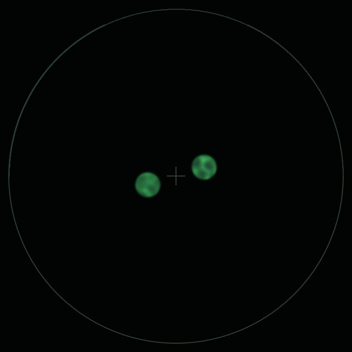
OffTwo spots: tilting translates the beam.
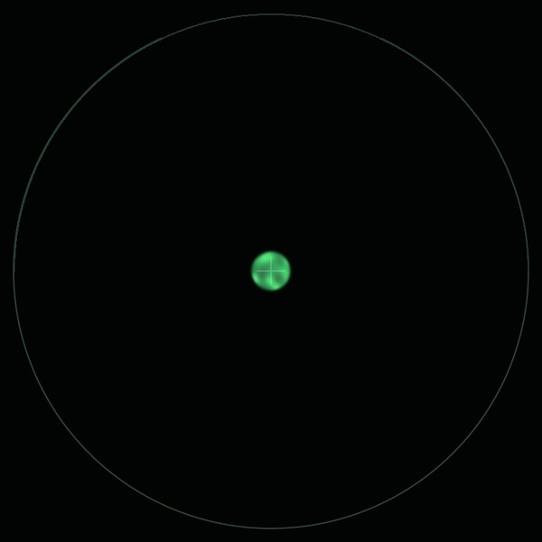
AlignedOne spot: a pure tilt.
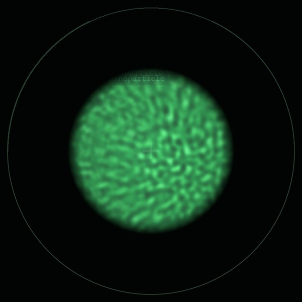
Off-axisThe HT wobble swings the image: averaged, it smears.
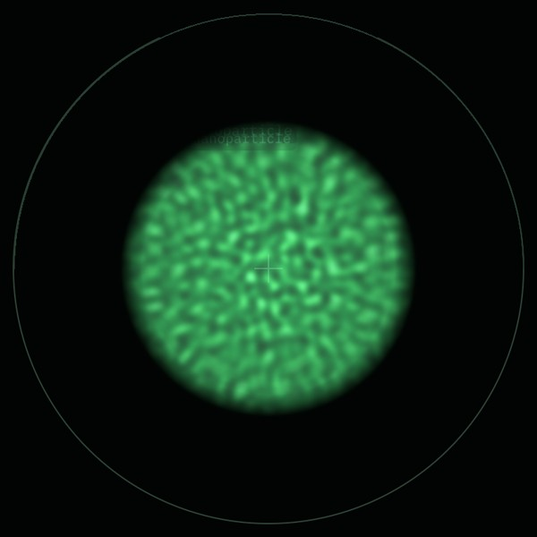
CenteredIt pulses about the center.
For high resolutionThe voltage center is a good starting point. For atomic-resolution work, follow it with a coma-free alignment (beam-tilt-induced image shift or a Zemlin tableau), with your facility's procedure.
Seeing with Electrons · TEM-view6
SOP-01 · TEM direct alignmentStep 5 of 5
5Objective stigmator
Round Thon rings
Objective astigmatism focuses one direction more strongly than the other. In the live FFT (diffractogram) of an amorphous area, it turns the circular Thon rings into ellipses, or into hyperbolas close to focus.
Move to a thin amorphous area (carbon film or the edge of the specimen) at high magnification.
Turn on the live FFT. Go somewhat underfocus so several rings are visible.
Select the objective stigmator. Adjust X, then Y, until the rings are circular.
Check through focus: the rings should shrink and grow evenly, without stretching in one direction.
Return to your working focus and area.
The Thon rings are circular at every defocus.
Quick reference
Alignment
Done when
Initials
Flash & Go (cold FEG only)
Emission recovered and stable
Gun shift / gun tilt
Spot fixed across spot sizes; current maximal
C2 aperture
Beam opens concentrically
Condenser stigmator
Round on both sides of crossover
Eucentric height
No lateral shift with the α wobbler
Pivot points X, Y
One stationary spot
Voltage center
Image pulses symmetrically
Objective stigmator
Circular Thon rings
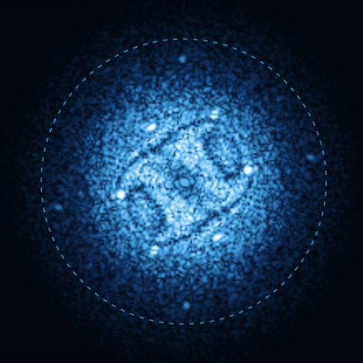
AstigmaticRings stretched into a bow tie.
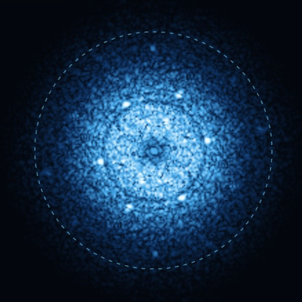
CorrectedCircular rings.
Seeing with Electrons · TEM-view7
Practice before your session
Try it on the digital twin
Every figure in this guide was computed by TEM-view, a physics-based transmission electron microscope that runs in your browser. Its training task “TEM: direct alignments” hides a different misalignment at each of these steps every time. At the end, it shows you how close you got.
Open the training task
On a phone, scan the code. On a computer, open the link, or open TEM-view and press Training.
See the physics
Click any part of the 3D column to learn what it does and how it is measured.
Get your true score
Rate your alignment, then see the hidden answer and each check, pass or fail.
Help build better microscopes
With your consent, anonymous practice sessions train AI that can assist real alignments.
SOP-01 · TEM direct alignment · v1.0 · October 2026 An educational guide. Follow your facility's procedures and the instrument manufacturer's documentation first. Figures: TEM-view simulations. github.com/Advanced-EM/TEM-view